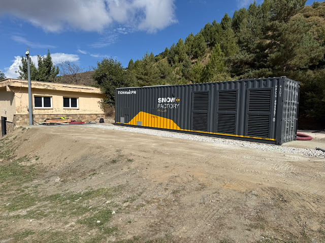
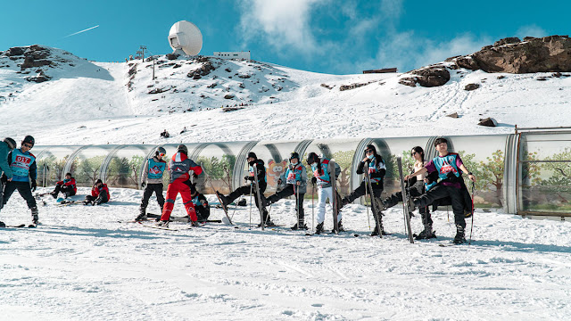

Si tienes pensado en viajar a Sierra Nevada para practicar Snow, esto es lo que debes saber:
Mejoras en nieve artifial y sistemas de producción.
En el ámbito técnico, uno de los trabajos más importantes ha sido la reparación de la balsa Zahareña, esencial para el sistema de producción de nieve. Las intervenciones parciales del verano anterior no evitaron las pérdidas de agua, lo que afectó puntualmente la fabricación de nieve durante la temporada 2024/25. Los nuevos trabajos de impermeabilización estarán terminados antes del inicio del invierno, algo fundamental para quienes disfrutan de las clases de snow o los cursos de una escuela de esquí en Sierra Nevada desde el primer día de la campaña invernal.
Además, se han instalado 12 nuevos cañones de nieve, adquiridos el año pasado pero pendientes de montaje. Ya se encuentran ubicados en las pistas Superverde (Borreguiles), Prado de las Monjas (Loma de Dílar) y El Río, listos para entrar en funcionamiento.
Una de las novedades más interesantes es la incorporación de un contenedor generador de nieve independiente de la temperatura ambiental. Por ahora se trata de un proyecto piloto en el complejo Mirlo Blanco, en Pradollano.
Renovación de zona de iniciación.
Para los esquiadores que comienzan sus primeras bajadas o participan en clases de esquí y snowboard, la estación ha renovado las alfombras de iniciación de Borreguiles. Dos nuevas cintas de doble tapiz reemplazan a las anteriores, duplicando la capacidad y mejorando la conexión entre zonas.
La primera sustituirá a la antigua Dauro I, situándose más cerca de la ladera del radiotelescopio, lo que libera espacio en el Llano de Borreguiles para ampliar la zona esquiable. La segunda reemplazará a la alfombra El Bosque, en un emplazamiento muy próximo al actual, con pequeños ajustes que mejoran la conexión entre todas las alfombras mecánicas del área.
De este modo, para la temporada 2025/2026, Sierra Nevada dispondrá de cuatro alfombras (dos nuevas), configurando un recorrido casi cerrado para la práctica de esquí de iniciación, ofreciendo así mayor seguridad y comodidad.
2. Rio: El descenso más popular (y largo)
La pista "Rio" es famosa por ser la más larga de la estación, bajando hasta Pradollano. Aunque es azul, debido a su extensión, te ofrece una gran variedad de pendientes suaves y tramos planos para practicar diferentes técnicas sin presión. ¡Ideal para terminar el día con una buena quema de piernas!
Mejoras en remontes y equipamientos
Paralelamente, se ha llevado a cabo la renovación de la galería de acceso a la estación inferior del telecabina Borreguiles, uno de los remontes más emblemáticos del complejo.
También se han realizado revisiones técnicas en los telesillas Parador y Emilio Reyes, además del cambio de cable en los remontes de Laguna y Stadium.
Por otro lado, se ha renovado la iluminación de las pistas El Río y Maribel, mejorando la experiencia del esquí nocturno con una luz más potente y sostenible.
Nuevos servicios para el visitante.
Con el objetivo de mejorar la experiencia, se están construyendo nuevos aseos públicos en la Plaza de Andalucía, junto a las oficinas de atención al cliente y taquillas. Además, se ha instalado un módulo portátil de baños en el aparcamiento de autobuses de Pradollano, reforzando así la infraestructura de servicios en la estación. Asimismo, se han ejecutado trabajos de mejora en la planta -4 del parking subterráneo de la Plaza de Andalucía, que incluyen nuevo asfaltado, pintura y renovación de aseos.
Nuevo restaurante Nuevasol
La construcción del nuevo restaurante Nevasol, situado a pie de pista en la zona de Borreguiles, avanza a buen ritmo y se prevé que esté finalizada antes de que finalice el año. Este edificio se levanta sobre el antiguo local del mismo nombre, inaugurado en 1983, aunque mantendrá una estructura similar, con forma de L, lo que permitirá proteger la terraza del viento y aprovechar mejor el espacio exterior,uno de los lugares favoritos de los esquiadores para descansar entre bajadas o tras sus clases de esquí.
Con todas estas actuaciones, Sierra Nevada se prepara para una temporada 2025/26 más moderna, eficiente y accesible. Tanto los niveles altos como los principiantes puedan disfrutar de una experiencia completa ya sea tomando una clase de esquí, alquilando su equipo o explorando las pistas de noche.